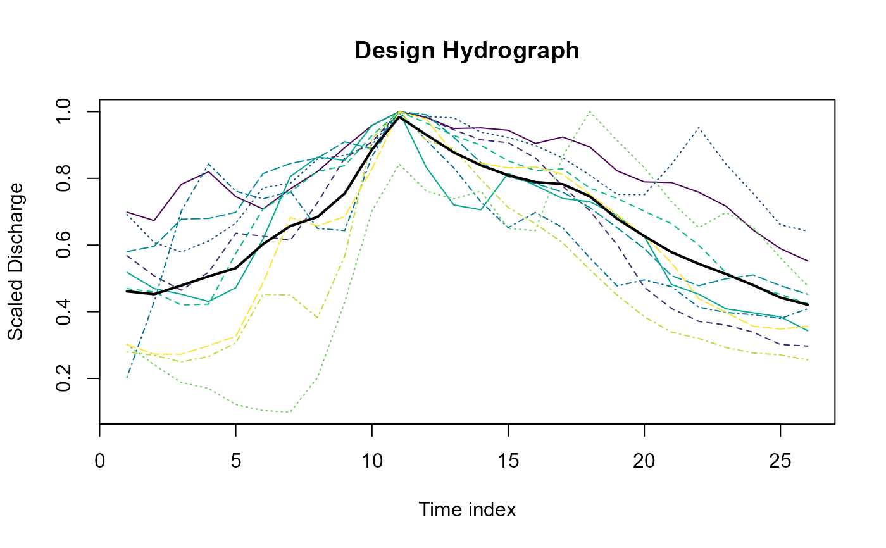

Design hydrograph extraction
DesHydro.RdExtracts a mean hydrograph from a flow series
Usage
DesHydro(
x,
Threshold = 0.975,
EventSep,
N = 10,
Exclude = NULL,
Plot = TRUE,
main = "Design Hydrograph",
ylab = "Scaled Discharge"
)Arguments
- x
a dataframe with Date or POSIXct in the first column and the numeric vector of discharge in the second
- Threshold
The threshold above which the peaks of the hydrograph are first identified. The default is 0.975.
- EventSep
Number of timesteps to determine individual peak events during the extraction process. For the comparison and averaging process the start and end point of the hydrograph is Peak - EventSep and Peak + EventSep * 1.5.
- N
number of event hydrographs from which to derive the mean hydrograph. Default is 10. Depending on the length of x, there may be fewer than 10
- Exclude
An index (single integer or vector of integers up to N) for which hydrographs to exclude if you so wish. This may require some trial and error. You may want to increase N for every excluded hydrograph.
- Plot
logical argument with a default of TRUE. If TRUE, all the hydrographs from which the mean is derived are plotted along with the mean hydrograph.
- main
Title for the plot
- ylab
Y label
Value
a list of length three. The first element is a dataframe of the peaks of the hydrographs and the associated dates. The second element is a dataframe with all the scaled hydrographs, each column being a hydrograph. The third element is the averaged hydrograph
Details
All the peaks over the threshold (default 0.975th) are identified and separated by a user defined value 'EventSep', which is a number of timesteps (peaks are separated by EventSep * 3). The top N peaks are selected and the hydrographs are then extracted. The hydrograph start is the time of peak minus EventSep. The End of the hydrograph is time of peak plus EventSep times 1.5. All events are scaled to have a peak flow of one, and the mean of these is taken as the scaled design hydrograph.
Examples
# Extract a design hydrograph from the Thames daily mean flow and print the resulting hydrograph
thames_des_hydro <- DesHydro(ThamesPQ[, c(1, 3)], EventSep = 10, N = 10)
